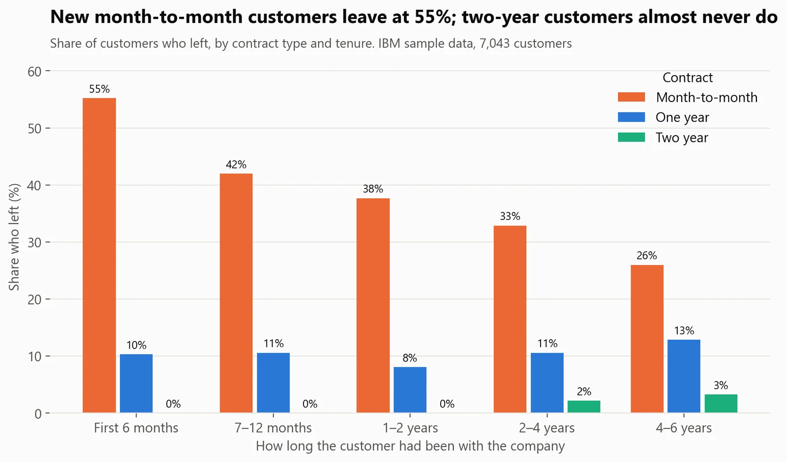
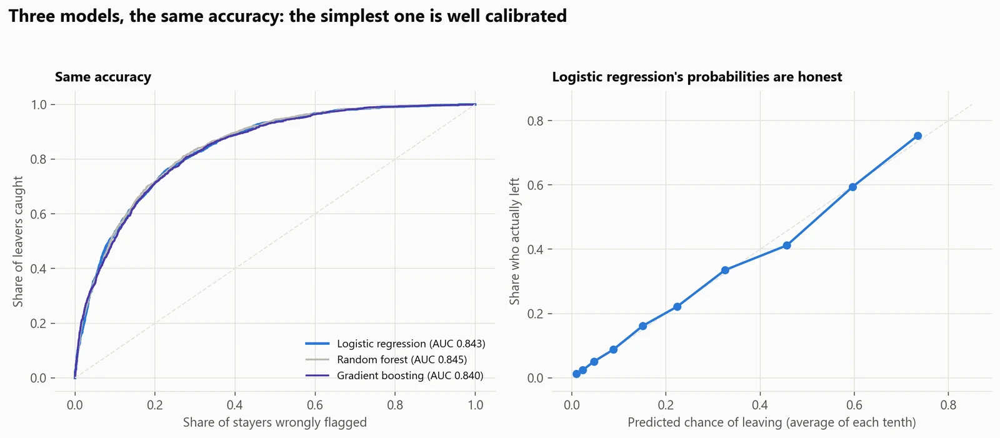
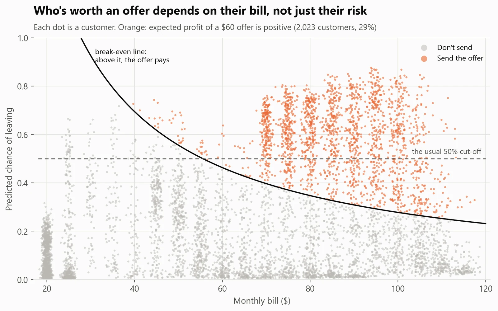
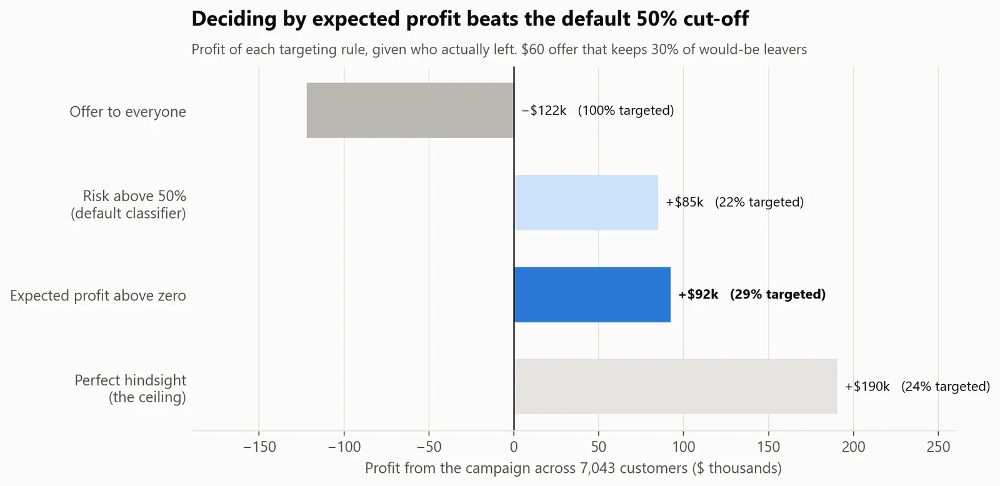
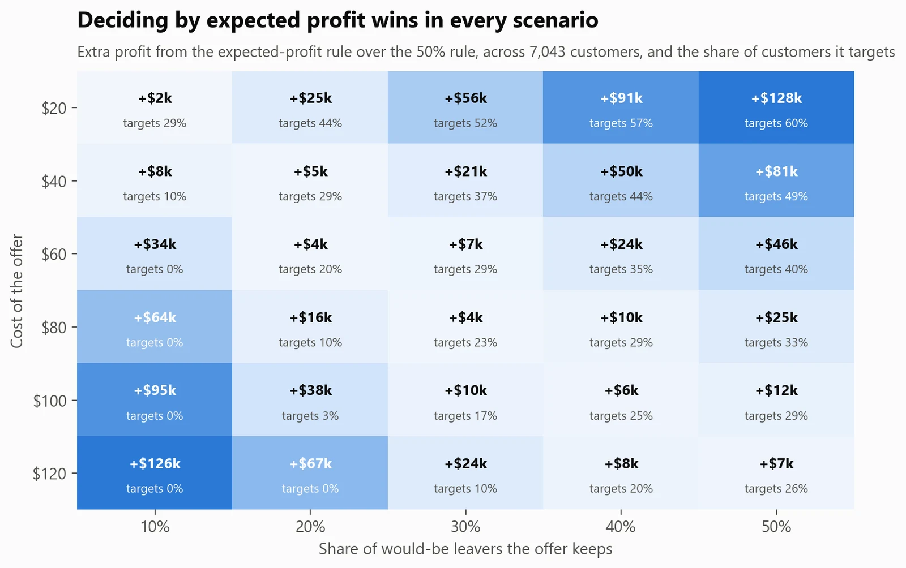

Customer analytics · Telecom
Who will cancel, and who's worth saving?
- Business question
- Which customers should get a retention offer?
- Key finding
- Only the 29% where the offer pays for itself (churn risk × the customer's bill). That beat the usual 'risk above 50%' rule in all 30 cost scenarios tested, and offering it to everyone loses money.
- Recommendation
- Send the offer to the 29% of customers whose expected profit is positive: almost all are on month-to-month fibre plans paying $70+ a month, and 57% of them did leave (against 26.5% overall).
- Estimated impact
- +$92kProfit from one targeted campaign, against −$122k for offering it to everyone (simulated: $60 offer that keeps 30% of would-be leavers).
Try it: change the offer's cost and success rate, filter the customers, and download who to contact.
Open the live dashboard- Data
- IBM's sample data for a fictional telecom company, 7,043 customers
- Methods
- Classification, calibration, permutation importance, profit-based decisions
- Tools
- Python: scikit-learn, pandas; SQL (DuckDB); unit tests
Results





How I did it
- Explored churn by segment in SQL (contract × tenure with ROLLUP subtotals, revenue at risk) after 7 data checks.
- Compared logistic regression, random forest and gradient boosting on out-of-fold predictions (5-fold cross-validation), then kept the simplest, best-calibrated model. I dropped total billed, which is mostly tenure × bill and only blurred the explanations.
- Turned probabilities into decisions with explicit economics: offer cost, success rate, months kept and margin, all in one place, with unit tests on the profit maths.
- Delivered a ranked list for the retention team with each customer's risk, the expected profit of contacting them, and the two main reasons the model flags them.
What could make this wrong
- It's sample data for a fictional company: realistic patterns, not a real business.
- The offer's cost and success rate are assumptions. A real campaign should measure them with a holdout group first.
- The data is a snapshot, so it can't say when a customer will leave.
What I learned
- A good AUC doesn't make a good decision. The cut-off has to come from the economics of the offer, not from 50%.
- Calibration matters as soon as probabilities get multiplied by money, which is why I kept the logistic regression over a slightly higher-scoring random forest.
- Simple models are easier to defend in a meeting: every prediction comes with two plain-English reasons.
What I'd do next
- Run the offer as an A/B test with a holdout group, to measure the real success rate before scaling it up.
- Score active customers every month and check that the risk ranking holds on new data.
- Model when customers leave (survival analysis), so the offer arrives before they decide.
- Replace the flat 12-month value with each customer's lifetime value.